Здравствуйте, Анатолий!
Мы постоянно обновляем личный кабинет и услуги банка. Чтобы вы не потерялись в изменениях, мы подготовили ответы на часто задаваемые вопросы.
Если вы не нашли ответ на свой вопрос, пишите в чат, и мы поможем.
Команда Модульбанка.
-
Где посмотреть реквизиты счета?
Есть два способа увидеть реквизиты счета. Первый — нажать на шестеренку, она в правом верхнем углу, и выбрать «Реквизиты компании». Второй — на главной странице нажать на последние цифры счета.
Первый способ
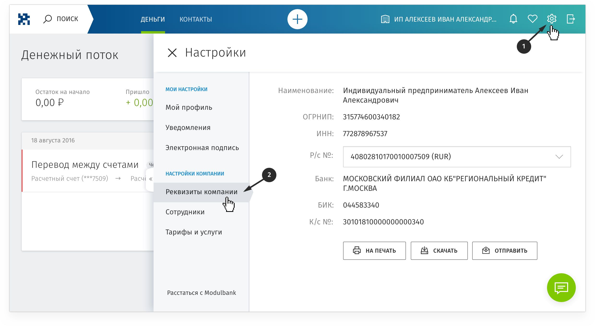Второй способ
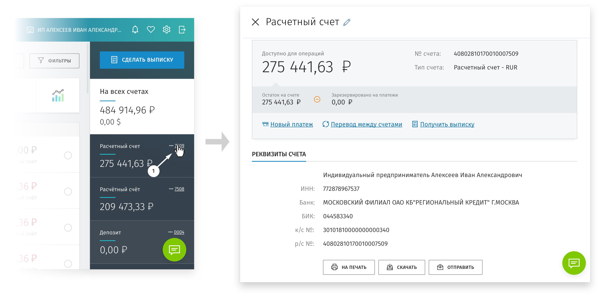 -
Как подключить смс-уведомления?
Мы сами подключаем смс-уведомления при открытии счета. Если по какой-то причине смс не приходят, вы можете подключить их вручную.
Чтобы это сделать, нажмите шестеренку— она в правом верхнем углу, и зайдите в раздел «Уведомления». В разделе можно настроить уведомления на разные события:
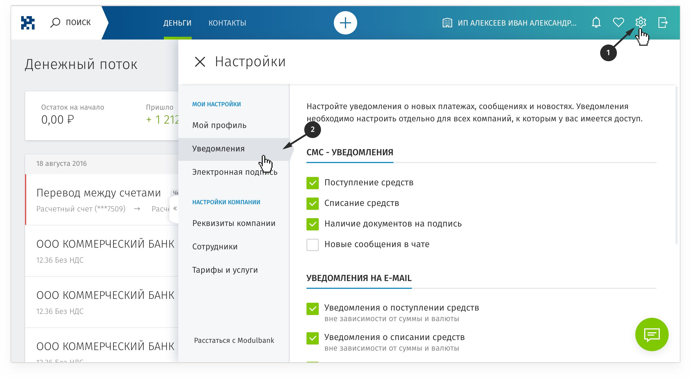 -
Как получить выписку?
Чтобы получить выписку, нажмите синюю кнопку «Сделать выписку».
Выписку можно получить по любому счету и за любой период.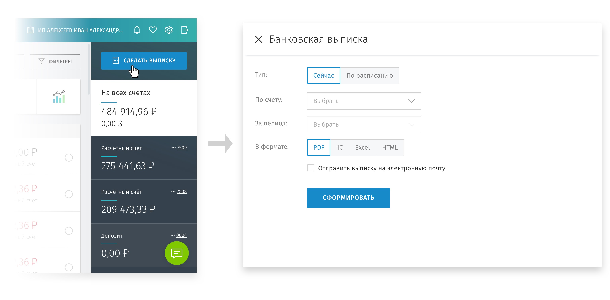 -
Как получить платежное поручение?
Все платежи отображаются на главной странице. Чтобы получить платежное поручение, выберите перевод, к которому нужно поручение, и нажмите стрелку в правом верхнем углу.
Платежное поручение можно скачать, распечатать, отправить на почту себе или партнеру.
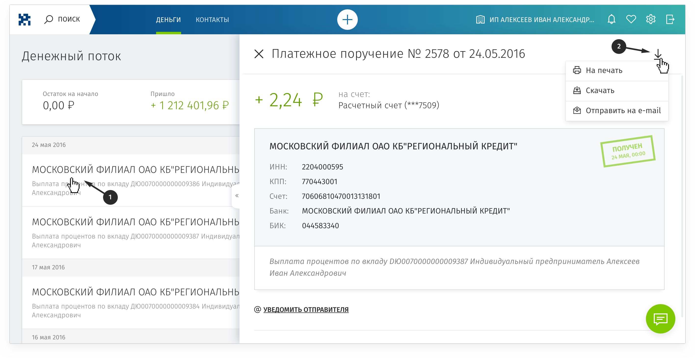 -
Как поменять почту?
Чтобы поменять почту, нажмите шестеренку — она в правом верхнем углу, и зайдите в раздел «Мой профиль». В разделе можно поменять адрес почты:
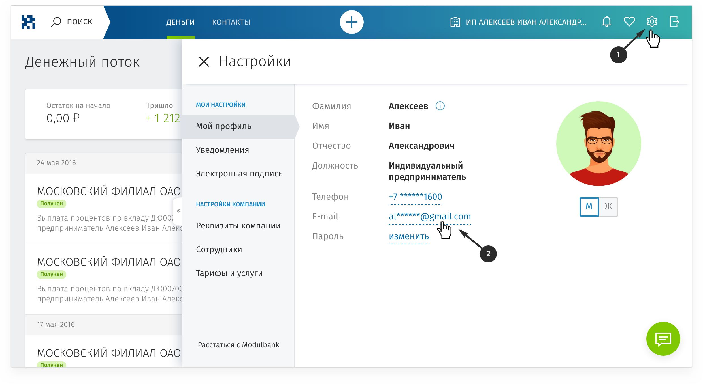 -
Как поменять телефон?
Чтобы поменять телефон, нажмите шестеренку — она в правом верхнем углу, и зайдите в раздел «Мой профиль». В разделе можно поменять телефон:
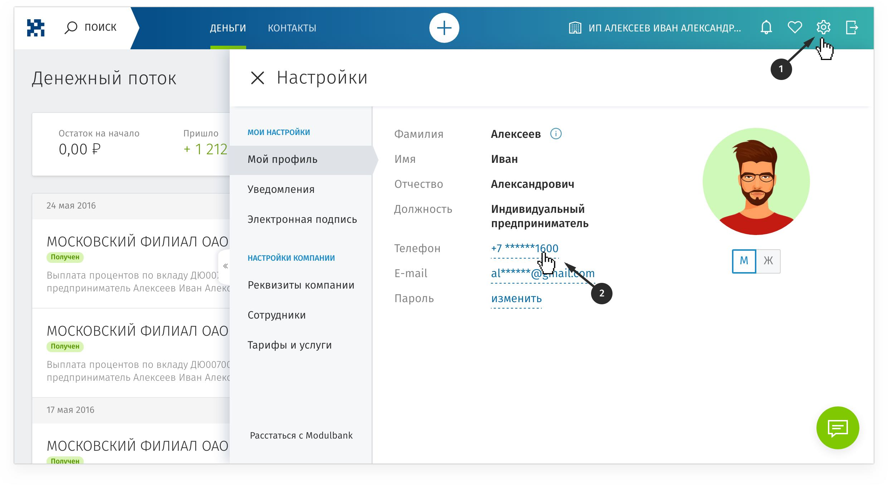
-
Почему у меня два счета?
Когда клиент открывает расчетный счет, мы предлагаем открыть еще карточный счет. Если клиент соглашается, он получает два счета.
Расчетный счет — основной счет предпринимателя: на этот счет можно получать оплату за работу, оплачивать с него расходы компании и налоги.
Карточный счет — дополнительный, он нужен для карты. Карту удобно давать сотрудникам, чтобы они покупали офисную бумагу, оплачивали контекстную рекламу или ужин с партнерами.
-
Для чего нужна карта?
Корпоративная банковская карта — то же самое, что обычная, только для компании, а не человека. Компания оплачивает ей расходы на командировки, закупку канцелярии, сервисы в интернете. Карта бесплатная и никогда не будет платной.
-
Как внести наличные на карту?
Вносить наличные можно несколькими способами: через кассу банков Юнистрим и Юниаструм, терминалы Московского кредитного банка и Бинбанка. Карта точек приема наличных — в приложении для айфона и андроида.
На внесение наличных есть ограничения:
- Через терминал Московского кредитного банка за раз можно внести максимум 40 000 рублей, а за сутки — 80 000 рублей; через терминалы Бинбанка — за раз 85 000 рублей, за сутки 300 000 рублей. На карте деньги появятся моментально, на счете — через час.
- Чтобы внести деньги в кассах Юнистрима, нужно сказать операционисту номер карточного счета и карты и показать паспорт. Внести деньги может только владелец карты. Минимум можно внести 150 рублей, а максимум 900 000 рублей. Деньги дойдут на следующий рабочий день.
- В кассе Юниаструма тоже нужно назвать номер карточного счета и карты и показать паспорт. Вносить деньги может кто угодно. Максимальная сумма взноса — 600 000 рублей. В рабочие дни деньги придут за четыре часа.
-
Какой процент я получу на остаток по счету?
На Оптимальном и Безлимитном тарифах мы начисляем процент на остаток по счету. Главное — чтобы на расчетном счете лежало 30 000 рублей или больше. На Оптимальном тарифе доходность — 3%, на Безлимитном — 5%.
С помощью доходности счетом можно пользоваться бесплатно. Оптимальный тариф стоит 5880₽ в год. Эти расходы можно компенсировать, если хранить на счете 196 000₽. То же самое с Безлимитным тарифом: в год он стоит 36 000₽, но если хранить на счете 720 000₽, абонентскую плату компенсирует доходность.
-
Как поменять тариф?
Чтобы поменять тариф, напишите в чат бизнес-ассистентам. Бизнес-ассистенты изменят тариф с первого числа ближайшего месяца.
-
Когда списывается комиссия за обслуживание?
Мы списываем комиссию за обслуживание авансом, в последний рабочий день месяца. Например, комиссию за сентябрь спишем 31 августа.
-
Как перевести деньги с расчетного счета на карточный?
Чтобы перевести деньги с расчетного счета на карточный, нажмите белую кнопку с плюсом и выберите «Перевод между счетами»:
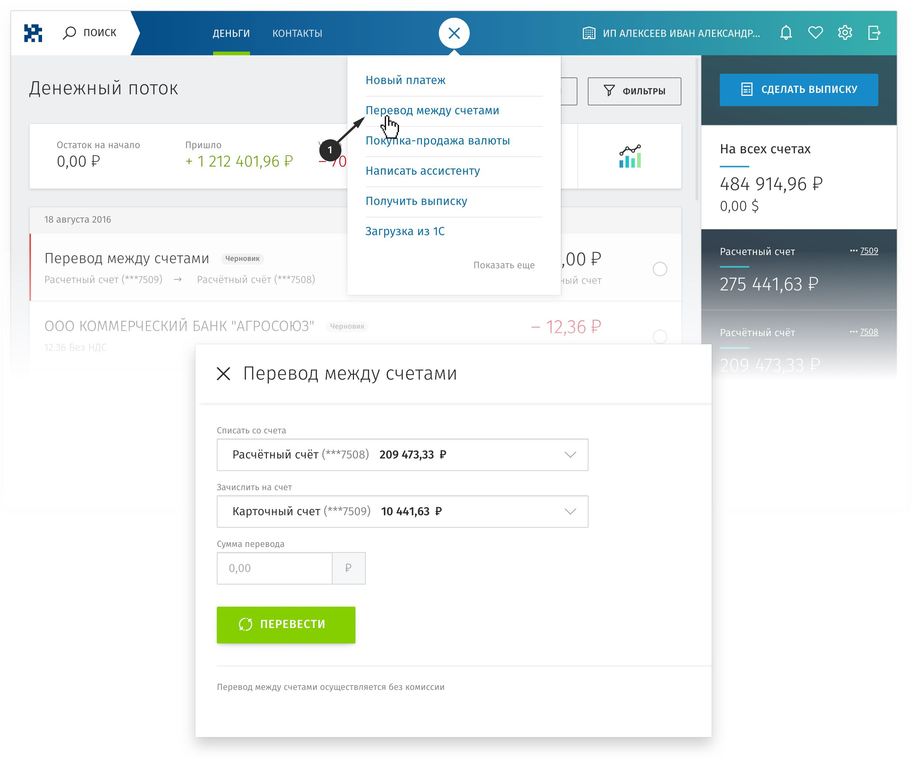 -
Как повторить перевод?
Чтобы повторить перевод, выберите нужный перевод на главной странице и нажмите на круглую стрелку справа:
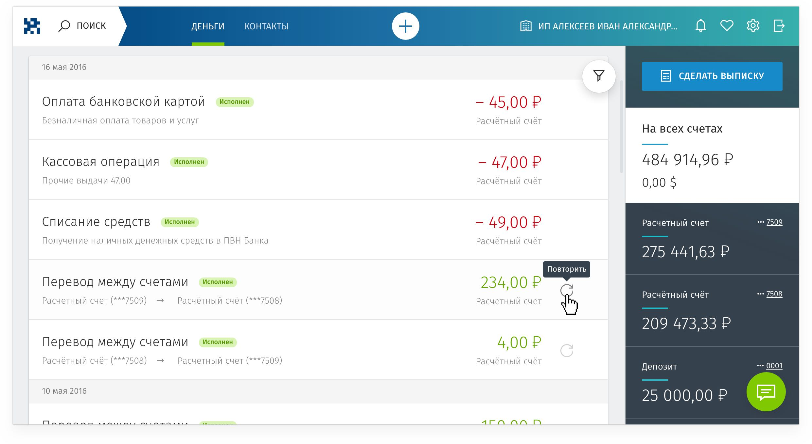 -
Как перевести деньги в другой банк?
Чтобы перевести деньги в другой банк, нажмите белую кнопку с плюсом и выберите «Новый платеж»:
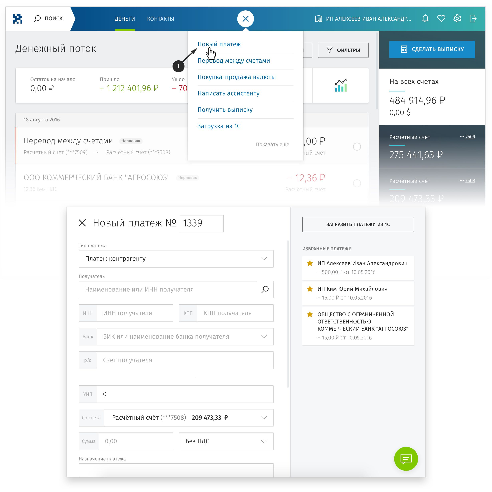 -
Как быстро вы отправляете платежи?
Мы отправляем деньги почти каждый час с 5:00 и до 20:30 по московскому времени, но как быстро они дойдут, зависит от банка-получателя.
Моментально уходят переводы внутри банка: например, если вы отправляете деньги со счета в Модульбанке, а у партнера счет тоже в Модульбанке. Еще один способ отправить моментально — перевести с карты на карту.
В выходные отправить перевод в другой банк не сможем, потому что не работают межбанковские платежи. Это правило Центрального банка.
-
Как открыть валютный счет?
Чтобы открыть валютный счет, напишите нам в чат. Откроем валютный счет за час и без поездки в банк.
-
Какая комиссия при оплате картой в валюте?
Комиссия за оплату картой в валюте — 1% от суммы покупки.
-
Что такое валютный контроль?
Валютный контроль проходят все, кто работает с иностранцами. Валютный контроль придумали чиновники и Центральный банк. Так они проверяют, что предприниматели не отмывают деньги, не продают запрещенные товары, не работают с мошенниками и террористами за границей.
Чтобы пройти валютный контроль, клиент передает банку договор с иностранцем и заполняет документы. В обычном банке клиент заполняет документы сам, например, справку о валютных операциях и распоряжение о списании валюты.
Мы проводим валютный контроль почти без участия клиента. От клиента ждем скан договора, остальные документы заполняем сами и отправляем на подпись. Клиенту остается их подписать и получить деньги.
-
Как купить или продать валюту?
Чтобы купить или продать валюту, нажмите белую кнопку с плюсом и выберите «Покупка-продажа валюты».
Покупать и продавать валюту можно круглосуточно. Мы обновляем курс четыре раза в день, чтобы он был максимально приближен к биржевому. Лучше всего покупать валюту во время рабочего дня, когда на бирже идут торги.
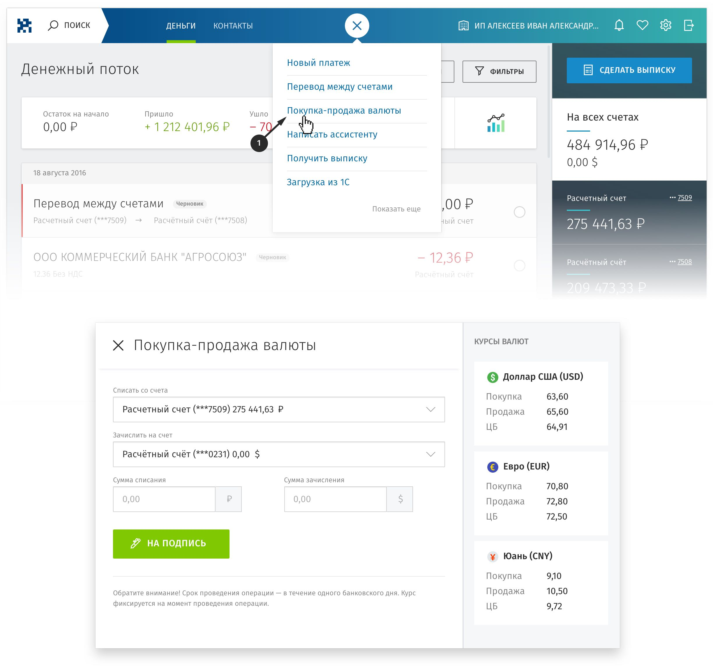
-
Почему банк запрашивает документы?
Банк запрашивает документы в двух случаях: во время ежегодной проверки и если у банка появились вопросы об источнике денег на счете клиента, налогах и переводах.
В этих случаях банк обязан запрашивать документы по федеральному закону №115.
Во время проверки банк просит прислать обычные документы — они есть у каждой компании. Например, договор с партнером, налоговую декларацию, подтверждение оплаты налогов. Мы принимаем документы по чату, поэтому для проверки не надо приезжать в банк.
Вот несколько советов, как не вызывать вопросы банка:
- платите налоги не меньше 0,5% от оборота по счету;
- не снимайте наличные с расчетного счета и карты, а если снимаете — сохраняйте подтверждающие документы;
- пишите в платежках по какому договору и за какие услуги переводите деньги;
- не работайте с однодневками.